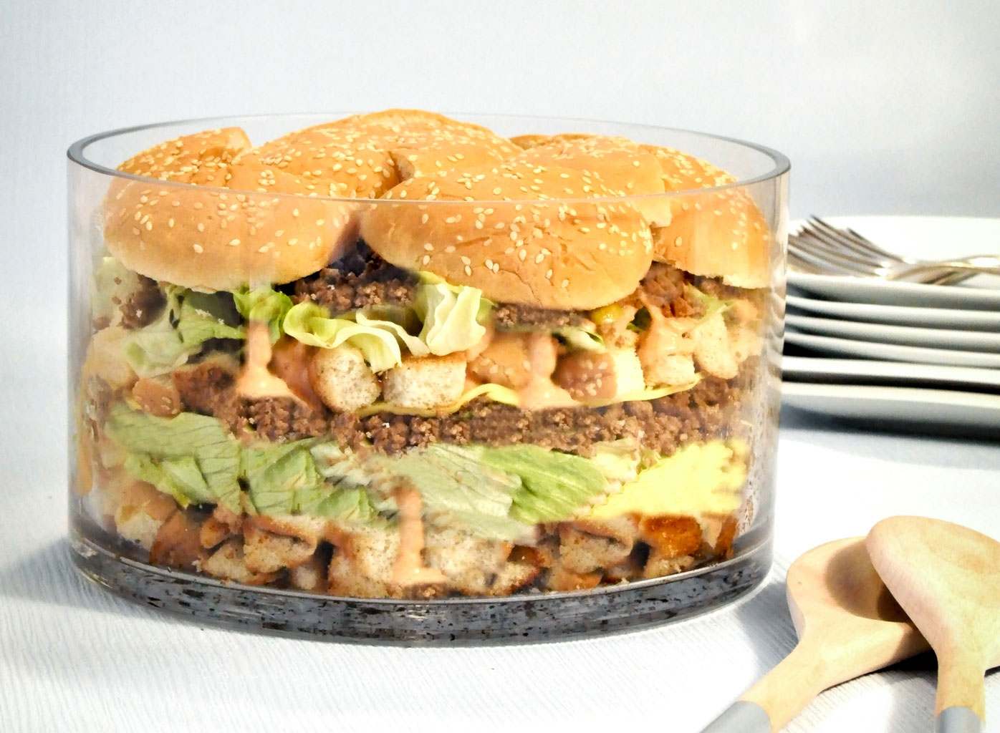

Big Mac Salat
 90 Min.
90 Min.
 simple
simple
 09.10.2023
09.10.2023
Für den Salat
Für den Soße
Zubereitung
 Arbeitszeit ca. 90
Minuten
Arbeitszeit ca. 90
Minuten
 Ruhezeit der Sauce
ca. 8 Stunden
Ruhezeit der Sauce
ca. 8 Stunden
 Gesamtzeit ca. 9
Stunden 30 Minuten
Gesamtzeit ca. 9
Stunden 30 Minuten
Für die Sauce alle Zutaten vermengen und für 25 Sekunden in die
Mikrowelle geben. Anschließend noch mal kurz umrühren und über Nacht im
Kühlschrank ziehen lassen, die Zwiebeln rehydrieren dabei.
Das Hackfleisch scharf anbraten, mit Salz und Pfeffer würzen und
auskühlen lassen.
Die Hamburgerbrötchen halbieren, toasten und in ca. 2 x 2 cm große
Würfel schneiden. Für die Optik 4 Deckel für die oberste Schicht
reservieren, diese ebenfalls würfeln.
Den Eisbergsalat in mundgerechte Stücke schneiden.
Für den Schichtsalat als Erstes 1/3 der Brötchenwürfel in eine große
Glasschüssel geben. Anschließend folgt jeweils eine Hälfte des
Eisbergsalates, der Sauce, des Fleisches. Dann eine Schicht
Käsescheiben, der Rest Brötchenwürfel (außer die für die letzte
Schicht), der übrige Eisbergsalat, die zweite Hälfte Sauce, eine Schicht
aus Gewürzgurkenscheiben, die zweite Hälfte Fleisch. Abschließend werden
die gewürfelten Brötchendeckel so auf den Salat gelegt, dass die Seiten
mit Sesam oben liegen.